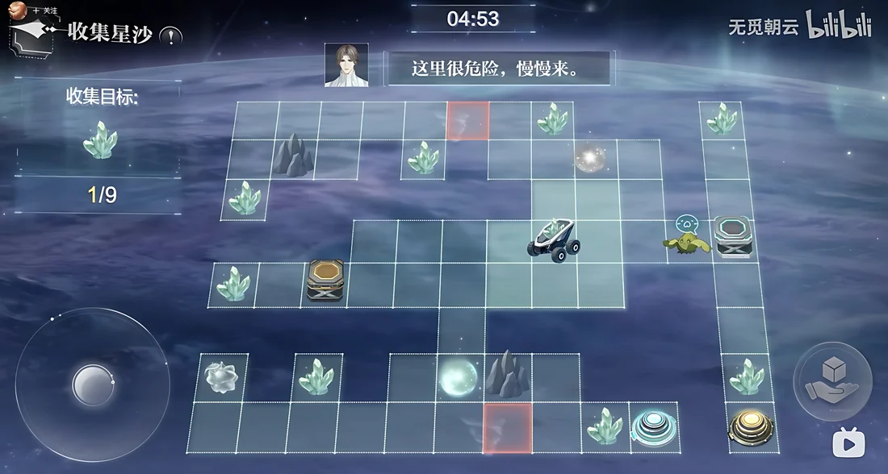
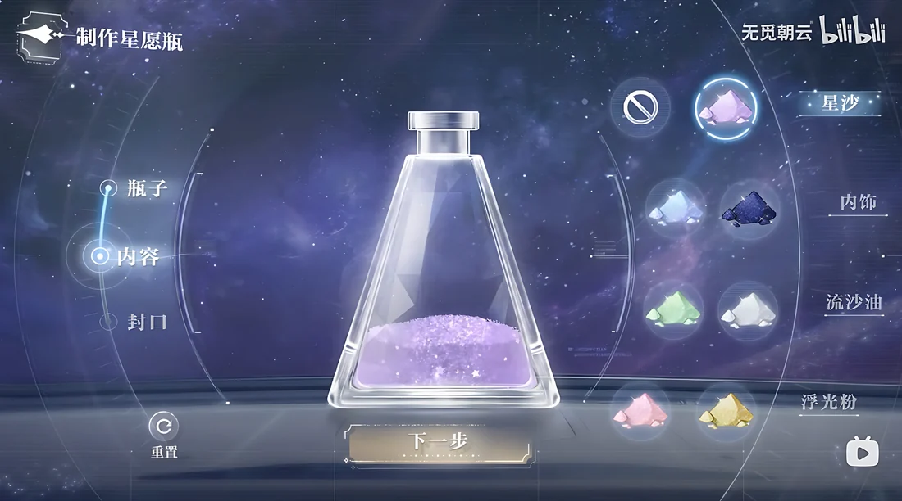
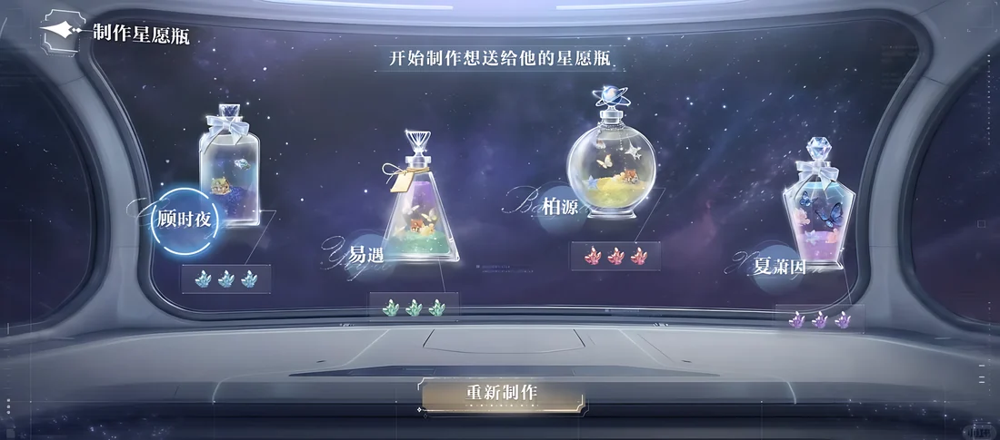
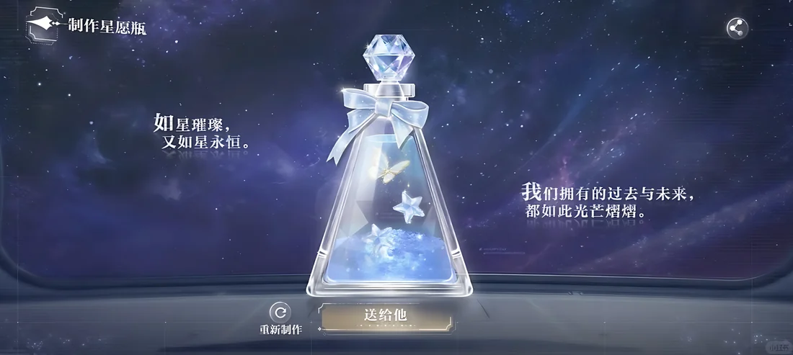
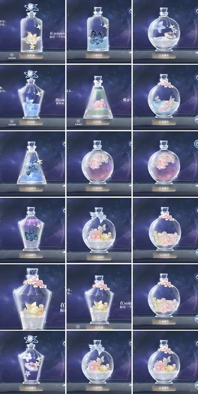
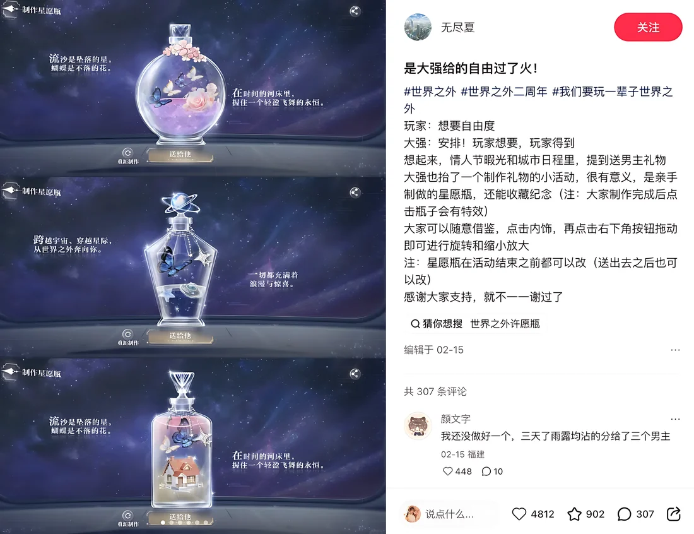
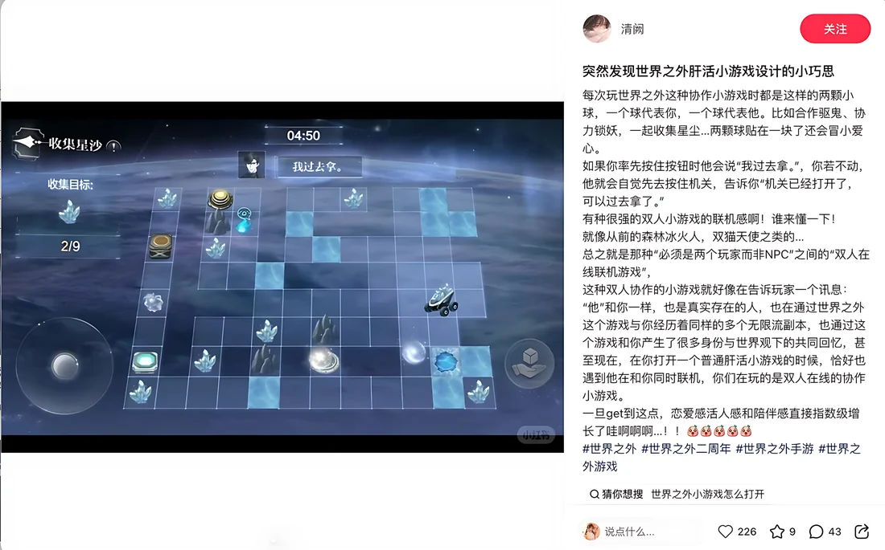
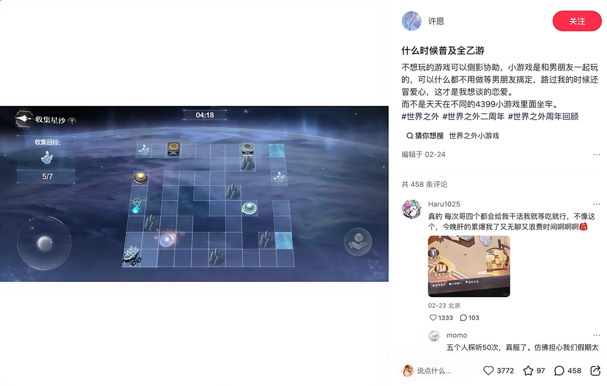

A Valentine's event where the player makes the gift instead of receiving one. They gather the materials, design the bottle, and give it away.
Valentine's events usually give every player the same pre-written scene. The player watches a romantic gesture but never makes one.
12 collection levels, the companion's behavior, a six-layer crafting system, and comment-based feedback in place of scores. I was the lead event designer.
Players posted their bottles on social media on their own. The most-liked post in the set reached 4,812 likes.
Valentine's is the most emotional date on an otome game's calendar, and also the most formulaic. The usual event is something to consume: log in, collect the date scene, read the holiday story. The player watches a romantic gesture but never makes one.
Holiday events usually deliver pre-written intimacy: scripted dates, gift boxes, costumes. It works, but every player receives the same gesture, and receiving is passive. How much the moment can mean is decided by the writers.
A gift you made yourself means more than one you were handed. Effort and choice are what make a gesture feel like yours. The bet was that players would care more about a Valentine's gift they built, from materials they gathered themselves, than about any scene we could script.
Can a seasonal event let the player make the romantic gesture themselves, with enough range that no two gifts look alike, and with a response from the game that makes every gift feel noticed?
The loop is built so that what the player collects in the levels becomes the material for the gift. By the time the player seals the bottle, every grain of sand inside it is something they collected, with him alongside.
Play through 12 hand-designed levels with route planning, traps and obstacles to gather star sand, while an AI-controlled companion reacts along the way.
Layer the DIY: bottle silhouette, sand colors, inner ornaments, flowing oil, shimmer powder, and the seal on top.
The finished bottle receives a few poetic lines of comment. The game responds like a person would, not like a scoreboard.
The player sends the bottle to the male lead they choose, which ends the event with a gesture the player made.
The collection stage matters more than it looks. I designed all 12 levels (route choices, trap placement, obstacle pacing) and the companion's behavior logic, so he is present while you gather: he warns you to slow down in dangerous corners and reacts as you go. The materials are not a resource grind. They come from time spent with him, and the bottle carries that before it is even decorated.
The main requirement was range. Each crafting layer is an independent choice, so there are enough combinations for a player's bottle to be recognizably theirs. Each of the four male leads also has a reference bottle in his own visual style, which gives players a starting point without limiting them.
The base form (flask, sphere, crystal-stoppered perfume bottle) sets the overall character of the piece.
The collected material, in multiple colors. Layered fills create gradients, so the effort of collecting is visible in the bottle.
Miniature scenes inside the glass: stars, butterflies, blossoms. This is the storytelling layer.
Adds motion: the sand drifts and settles when the bottle moves.
The finishing light pass: glint and sparkle tuned to the bottle's palette.
Ribbon and stopper. Sealing the bottle is the step that turns a craft project into a gift.
The sand inside the bottle is sand the player personally collected, with the male lead present and talking throughout the level. What the player earns in gameplay becomes the material for the gift, so the finished bottle is not an item picked from a menu. It holds the time they spent together. This connection is what turns a DIY feature into a romantic gesture.
A finished bottle receives poetic comment lines, such as "Brilliant as stars, and as eternal," instead of a score, a star rating, or a rarity tier. Once a creation is graded, players start optimizing instead of expressing themselves. The system's job here is to be the first one who sees the gift and says something kind about it.
The display framing, lighting and poetic captions make every finished bottle ready to screenshot as it is. This was a deliberate requirement, not polish added at the end. Players post a gift they are proud of, and every shared bottle shows the event to more people.
The idea behind all three: in an otome game, the strongest emotional content is what the game lets the player express.

One of the 12 collection levels: the player plans a route through traps and obstacles to gather star sand. He is there the whole time: "It's dangerous here. Take it slow."

The crafting screen: bottle, contents and seal are separate tabs. Star sand, inner ornaments, flowing oil and shimmer powder are laid out as a palette. Each panel is one choice.

Each of the four male leads has a reference bottle in his own visual style: "start crafting the bottle you want to give him." It gives a direction without being a template to copy.

The finished bottle, framed and captioned by the system ("Brilliant as stars, and as eternal" · "Every past and future we hold shines like this light"), with one button left: send it to him.
For a creation system, the clearest sign of success is whether players think the result is worth showing to other people.



